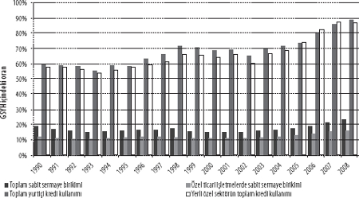
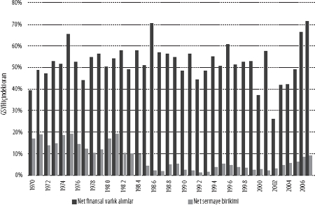
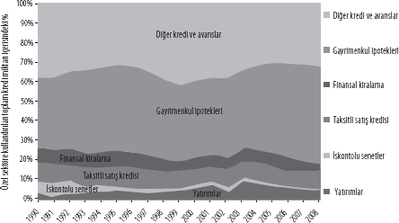

(Kaynak: SARB 2009)
Sam Ashman, Ben Fine
ve Susan Newman
Neoliberalizmin, ekonomik ve toplumsal iktidarı emekten uzaklaştırıp sermayenin dizinin dibine çekmeye dönük bir küresel sınıf projesi anlamına geldiği artık geniş kesimlerce anlaşılmış bulunmakta. Ekonomik, toplumsal ve siyasi boyutlar üzerinde karmaşık ve çok değişken bir yapı sergileyen neoliberalizmin gerek yapılan tahliller, gerek strateji bakımından geçerli bir terim olduğu da şüpheli. Zamana, mekâna ve konuya bağlı olarak değişkenlik sergilemekle birlikte, kendi ekonomik ve toplumsal efsanelerini ebedileştirmeyi biliyor: Neoliberalizmin getirdiği çeşitlilik sayesinde rengarenk, capcanlı bir kapitalizm. Başta Britanya ve ABD olmak üzere ulus devletler ve ayrıca uluslararası kurumlar içinde eriştiği nüfuzun köklerini savaş sonrası ekonomik canlılık döneminin çöküşüne ve bu çöküşün getirdiği 1970'ler ekonomik krizine kadar sürebiliriz. Ancak, neoliberalizmin hâkim politika pratiği ve ideoloji şeklinde yerleşmesi, ancak SSCB yıkıldıktan, Küresel Güney'deki alternatif kalkınma projeleri suya düştükten, emeğin ve sosyal demokrasinin geri çekilişi başladıktan sonra ortaya çıkan geniş konjonktür içinde mümkün olabildi. Çok boyutlu yapısına karşın, bugün genel olarak "finansallaşma" şeklinde andığımız süreçleri ve bunların etkilerini incelemeden neoliberalizmin doğasını anlamanın mümkün olmayacağı kanısındayız. Finans, neoliberalizmin payandalanması ve sürekli kılınmasında can alıcı ve hatta belirleyici unsur ve mekanizma olagelmiştir.
Bretton Woods sisteminin çöküşü sonrasında finans piyasaları, kurumları ve aktörlerinin pıtrak gibi çoğalmasıyla finansallaşma teriminin anlamı arasında ancak gevşek bir bağlantı kurulabilir. Kurumsal yatırımcıların giderek önemini artırması, ekonomi bünyesindeki finansal faaliyetler yelpazesinin günden güne genişlemesi, finansal hizmet ve araçların, ayrıca bugünün kepaze subprime ipotekleri de dâhil olmak üzere finans kuruluşları ile piyasalarının rüzgâr hızıyla yaygınlaşması hep bu geniş terimin çatısı altında toplanıyor; bu doğru. Yine bu süreçte, finansla haşır neşir olanların muazzam ödüllere kavuştuğu, daha önceki eğilimlerin aksine adaletsizliklerin gittikçe derinleştiği, finansın yeni yeni ekonomik ve toplumsal yeniden üretim alanlarına nüfuz ettiği de görülüyor. Finans sektörünün yaşadığı bu genişleme ve yayılma hakkında yeterince belgeye sahibiz. ABD'de, finansal varlıkların değeri 1980'de GSYH'nin dört katıyken, 2007'de on katına çıktı. Dünya genelindeki finansal varlıklar toplam değerinin dünya GSYH'sine oranı da aynı dönemde üçe katlanarak 1,5'ten 4,5'e fırladı.[1] Finansal yatırımlarla elde edilen kazancın giderek artması karşısında Martin Wolf şöyle yazıyordu: "ABD'nin kendisi sanki dev bir koruma fonu gibi görünüyor. Finans şirketlerinin vergi sonrası kârları, tüm şirket kârları içinde 1982'de sadece yüzde 5'lik paya sahipken, bu oran 2007'de yüzde 41'i buldu."[2]
Ancak, finansallaşma kesinlikle finans piyasaları ve varlıklarının dört bir yanda türemesinden ibaret değil. Finans dışı şirketlerin finansal faaliyetlere de yönelmesi ve kârlarında bu faaliyetlerin payının gün geçtikçe artması kritik bir gelişme. Bunun yanı sıra, serbest piyasalardan temin edilen kazançlar veya borçların yatırım finansmanında oynadığı rol de büyümekte. Ortaya çıkan dinamik, pek çok bakımdan, Finans Kapital eserinde finans sermayesi ile sanayi sermayesi arasında derinleşen bir kaynaşmadan söz eden Hilferding'in söylediklerinin tam tersi yönde işliyor.[3] Hatta finansallaşma, bir derecede, sanayi sermayesinin bankalar şeklinde kendini gösteren finansal sermayeden ayrışmasını yansıtmakta. Sanayi kuruluşlarında finansallaşmanın artması ise, yatırım bankalarını ticari işletmeler yerine şahıslara finans hizmeti sunarak kazanç elde etmeye yöneltmekte.[4]
Borcun yaygınlaşması ve bireyselleşmesi -ki reel ücretlerde otuz yıl boyunca devam eden durağanlık ve düşüşü telafi etme çabası da bunda pay sahibidir-, talebin ayakta tutulması yolunda can alıcı öneme erişti. Tüketimin temelinde kredinin rolü giderek artarken, bu süreç ağırlıklı olarak, konuttaki değer artışının teminata dönüştürülmesi üzerinden işliyor. Bireysel hane halkı borçlarındaki artış son derece sıra dışı. ABD'de 1981'de yüzde 48 olan hane halkı borcu-GSYH oranı, 2007 itibarıyla yüzde 100'ü bulmuştu.[5] Öyleyse, finansallaşmanın sadece sermaye ile ilgili olmadığını, emeği de ilgilendirdiğini tespit etmeliyiz. Aşağıda borçlar yığılırken, tepede servetlere servet katılıyor. ABD'de, gelir dağılımdaki adaletsizlik de 1929'daki zirve seviyesine geri döndü: En üstteki yüzde 1'lik kesim, gelirler içerisinden yüzde 23'lük pay alıyor.[6] Aynı zamanda, gelişmekte olan, orta gelir düzeyine sahip ülkelerin dış borçlarının da kabardığını gözlemliyoruz. Gelişmekte olan ülkelerde bulaşıcı toksik varlıkların öne çıkan bir dolaysız etkisi gözlenmese de, ihraç mallarına yönelik talepte, doğrudan yabancı yatırımlarda, yardımlarda ve yurtdışında çalışanların gönderdiği paralarda gerçekleşen düşüş nedeniyle finansallaşma yine büyük önem kazanıyor. İlerleyen sayfalarda Güney Afrika örneği için de göstereceğimiz üzere, bu tip ülkelerde de finansal çıkarlar siyaseti ve sınıf yapılarını etkiliyor. Buna ek olarak, pek çok emtia piyasasının giderek finansallaştığı bir ortamda, spekülasyonların fiyat dalgalanmaları üzerindeki etkisi güçleniyor (özellikle gıda ve enerji piyasalarında). Ayrıca, bir diğer kritik konu olarak, dünya ekonomisindeki büyümeye spekülasyonun ve bir dizi spekülatif balonun öncülük ettiğini gördük. Dolayısıyla, birikimin ritmi ve hızı da finansallaşmanın etkisi altında gelişmekte.
Birbiriyle bağlantılı bu gelişmeleri Marksist kuram içerisine nasıl oturtabiliriz? Marx, çözümleme yolunda elverişli iki ayrım yaptı. Bu ayrımlardan ilki, faiz getiren sermaye ile ister üretimde, ister mübadelede kullanılsın, sermayenin diğer biçimleri arasında ortaya çıkıyor. İkincisi ise, üretimdeki artık değerin çekilip alınması yoluyla gerçekleşen reel sermaye birikimi ile henüz üretilmemiş, ancak finansal sistemlerde mübadelesine başlanmış artık değerler üzerinde hak temin eden kâğıtlar, yani maddi olmayan sermaye birikimi arasında kendini gösteriyor. Bu iki birikim biçimi arasında bulunan, şartlara bağlı ve karmaşık denge, birikimin büründüğü yurtiçi ve uluslararası biçimler yelpazesi çerçevesinde, tarihsel koşullar tarafından belirlenmekte.
Neoliberal dönemde, spekülatif varlıkların reel yatırım aleyhine genişlemesi sonucunda reel birikimin maddi olmayan sermaye karşısında tali konuma indirgendiğine, ayrıca diğer tarafta da faiz getiren sermaye imparatorluğunun topraklarına dâhil edildiğine tanık oluyoruz. Böylece, sistematik bir finansallaşmış birikim modeli boy gösteriyor. Bu durumu, devlet öncülüğünde ekonominin ve toplumun yeniden yapılandırılması veya özelleştirmelerin yaygınlaştırılması gibi, finansal varlıkların ekonomik ve toplumsal önemini daha da pekiştiren gelişmelerden ayrı düşünemeyiz. Ortaklaşmaya dayalı dönüşüm projelerinin gerilemesi, demokratik katılım ve yönetimin giderek piyasa ve finansa eklemlenmesi, yurttaşların bir tüketici olmaya teşvik edilmesi ve kendini gerçekleştirmenin aracı olarak tüketimin özendirilmesi sonucunda, siyaset ve kimlik alanlarındaki daha geniş ölçekli ideolojik kaymaların da bu gelişmelere eşlik ettiğini görüyoruz.
Sınıflar arasındaki küresel güç dengesi, böylece iki yönlü bir kayma sergilemekte: Sermayeden emeğe doğru ve bazı sermaye biçimlerinden diğerlerine doğru. Bunu söylemekle, neoliberalizmin bir rantiye sınıfının geri dönüşü anlamına geldiğini ileri sürmüyoruz. Kriz konusunda, Minsky'nin getirdiklerine benzer aykırı açıklamalardan alınabilecek çok şey varsa da, bu açıklamaların, kapitalizm için yukarıda ana hatlarını çizdiğimiz ekonomi politik ve ayrıca sınıf dinamikleri içerisine yeterince oturtulmadığı anlaşılıyor.
Özetle, finansallaşma hakkında aşağıdaki tespitlerde bulunabiliriz:
• Finans araçları ve faaliyetleri, reel yatırımların zararına olacak şekilde genişlediğinden, belli sektörlerde, belli zamanlarda olağanüstü yatırımlar gerçekleşse bile, reel yatırımların genel düzeyi ve yararlılığı azalır.
• Hissedarlık getirisi veya diğer bir ifadeyle finansal değer, ekonomik ve toplumsal değerler karşısında öncelikli kılınır.
• Her alanda muhafazakârlık ve piyasalaştırma politikaları saldırıya geçer.
• Ekonomik ve sosyal politikalar üzerinde finansın sahip olduğu nüfuz hem doğrudan, hem de dolaylı olarak genişler.
• Ekonomik ve toplumsal yaşamın giderek artan sayıda boyutu, finansal istikrarsızlığın doğurduğu dalgalanma risklerine maruz kalır.
Neoliberalizmin başka, öngörülemeyen sonuçları da kapitalizmin dünya ölçeğindeki eşitsiz ve karma gelişimini etkilemiş bulunuyor. Kambiyo üzerindeki denetimin gevşetilmesi, pek çok ekonomiyi sermaye hareketleri karşısında kırılganlaştırmakta ve koruma kalkanı olarak yüksek seviyede rezerv biriktirme yönünde bir baskı yaratmakta. Bu durumda, küresel ölçekte ABD'nin muazzam bir ticaret ve ödemeler açığı ile karşılaştığını, diğer tarafta özellikle de Çin tarafından Amerikan dolar rezervlerinin biriktirildiğini görüyoruz. ABD'nin açıklarına ve çok düşük faiz oranları uygulamasına, benzer açıklara sahip başka ülkelere dayatılan türden politikaları benimsememesine rağmen, Amerikan doları çökmüş değil. Bunların yanında, savaş sonrası canlılık dönemi bittiğinden beri gözlenen genel durgunlaşma süreciyle finansallaşma arasından bağlantı bulunmakla birlikte, kendini işlevsiz finans biçimlerinden korumayı başaran, özel sermayenin reel birikimi yolunda devletin teşvik edici gücünü kullanan, ücret artışlarını üretkenlik artışlarından düşük tutan, hem iç hem de dış pazar bulabilen ülkeler, ayrıcalıklı kalkınma limanları oluşturabiliyorlar. Bugün için en fazla göze batan örnek Çin olmakla birlikte, Doğu Asya'nın "kalkınmacı devletleri" de onu takip ediyor. Güney Afrika ise, geleneksel olarak çekirdek endüstrileri konumunda bulunan madencilik ve enerji etrafındaki kimi sektörel istisnalara karşın, bu kapitalist kalkınma modelinin tam tersi yönde bir örnek koyuyor önümüze.
GÖKKUŞAĞI ULUSUNA MERHABA[7]
Brezilya ile inatçı bir rekabet içerisinde bulunsa da, Güney Afrika bugün "resmî olarak" dünyanın en eşitsiz toplumu.[8] Devletin 2009 yılı Kalkınma Göstergeleri'ne bakılacak olursa, Güney Afrikalıların en yoksul yüzde 20'lik dilimi toplam gelir içerisinden sadece yüzde 1,6'lık pay alırken, en zengin yüzde 20'lik kesimin payı yüzde 70'i buluyor.[9] Birleşmiş Milletlerin "refah"a dair son İnsani Gelişmişlik Endeksi'nde, Güney Afrika bir sıra daha gerileyerek 182 ülke arasında 129'uncu oldu.[10] Küresel ekonomik kriz öncesinde, işsizlik oranı bakımından zirvedeki ülkeler arasındaydı ve şimdi de resmî oran yüzde 35,4'e, diğer bir deyişle çalışabilir nüfusun üçte biri oranına erişmiş durumda.[11] Sermayenin, yararlanmak üzere bir yedek işgücü ordusu yarattığı yönündeki Marksist düşünce, bugünün Güney Afrika'sında geçerliliğini bütünüyle sürdürüyor. Marx, bu ordudaki askerlerin dünyadaki en yüksek HIV oranlarıyla pençeleştiğini de öngörebileceği bir çağda yaşamadı.[12] Bu tablo, orta gelirli ülkeler sınıfında yer aldığı halde, Güney Afrika'da ortalama ömrün BM verilerine göre neden sadece 51,5 yılda kaldığını açıklamaya yardımcı oluyor.[13]
Peki, Güney Afrika'da apartheid rejiminin yıkılışından sonraki dönemi için yapılacak kapsamlı bir ekonomi politik çözümleme içerisine tüm bunlar ve daha başka gelişmeler nasıl oturtulmalı? Bizler, neoliberalizm ve finansallaşmanın bölgede büründüğü özgün biçimi, ayrıca dünya ekonomisinde ve kapitalist kalkınma sürecinde meydana gelen geniş ölçekli değişimler ile apartheid mirası arasındaki etkileşimi irdelemek gerektiği kanısındayız. Küresel birikim ile bu birikimde gözlenen kaymalar ve yeniden yapılanmalar, sınıf iktidarının şu veya bu ülkedeki belli ekonomik yapı ve biçimlerinin aracılığından faydalanmak zorunda. Güney Afrika'daki birikim sistemi için, "Maden-Enerji Bileşimi" (MEB) tanımlamasını uygun buluyoruz. Bu bileşimde, birikim süreçlerinin öteden beri bir avuç sektöre bağımlı kalması ve bu sektörlerin egemenliğinde bulunması söz konusu. Devletin yoğun teşviklerinden faydalanan ve madencilik ile enerji endüstrileri etrafında kümelenen bu sektörleri ham ve yarı-işlenmiş madencilik ürünleri, altın, elmas, platin, çelik, kömür, demir ve alüminyum şeklinde sıralayabiliriz.[14]
Güney Afrika'daki üretim faaliyetleri bakımından değerlendirildiğinde, finansallaşmanın, kısa vadeli yabancı sermaye girişleriyle, muazzam bir uzun vadeli sermaye çıkışı arasında, ülkeye has bir bileşim oluşturduğu görülmekte. Sermaye girişlerine, büyük bölümü lüks tüketimden kaynaklanmak üzere, tüketici borçlarındaki artışlar eşlik ederken, sermaye çıkışları ise ülke içinde sadece kârlı MEB sektörlerine yoğunlaşan büyük "yerli" şirketlerin yurtdışına yönelmesi ve faaliyetlerini uluslararası düzleme taşıması ile gerçekleşiyor. Sonuçta, son krizin dalgaları ulaşmadan önce bile, istihdam yaratmayan bir büyüme yaşanmakta, yeni siyah seçkinlerin de içinde bulunduğu küçük bir azınlık için yaşam standartları yükselirken, halkın büyük bölümü kalıcı kitlesel yoksullukla boğuşmaktaydı. Şekil 1, Güney Afrika'nın yıllık GSYH büyüme çizgisini gösteriyor.
Şekil 1: Güney Afrika'da yıllık GSYH büyüme hızı, 1990-2009
(Kaynak: SARB 2009)
Krizin Güney Afrika üzerindeki etkisi, gelişmekte olan ülkelerin pek çoğundaki gibi, kendini asıl olarak küresel talepteki düşüş üzerinden hissettirdi. Madencilik ve imalat sektörlerine ulaşan bu talep dalgasına, likiditedeki sert düşüş ve Batı ekonomilerindeki kredi daralmasının Güney Afrika'ya özgü bir biçimi de eşlik etmekte. Tüm bunların nihai sonucu ise, son 17 yılın en büyük resesyonuyla birlikte eşitsizliklerin daha da derinleşmesi ve aşağıdaki rakamlar oldu:
• 2009'da yaklaşık 1 milyon kişilik istihdam kaybı.
• 2008 sonu ile 2009 ortası arasında GSYH'de yüzde 3'lük düşüş.
• 2008'in ilk çeyreğinde, madencilik sektöründe ortaya çıkan %33'lük rekor üretim düşüşü.
• Ulusal Otomobil Üreticileri Birliği'ne göre, Ocak 2009'da otomobil sektöründe yüzde 50'lik rekor üretim kesintisi.
• Nisan 2009 itibarıyla, imalat sektörünün yıllık üretiminde yüzde 21,6'lık rekor gerileme.
• En büyük etki otomobil, temel kimyasallar ve fabrikasyon metal ürünlerde görülmek üzere, 2009'un son çeyreğinde imalat sektörünün toplam üretiminde yüzde 4'lik daralma. 2010 başı itibarıyla imalat sektörü üretimi 2005 seviyesinin altında.
• 2008'in üçüncü çeyreği ile 2009 ortası arasında, özel sektör kredilerinde tam bir çöküş. Sonradan toparlanma gerçekleşse de, özel sektöre sağlanan kredilerdeki büyüme, 2009 Eylül'ü itibarıyla, son 43 yılın en düşük oranı olan yüzde 1,5 düzeyinde.
• 2009'un ilk yarısında tüketici harcamalarında yüzde 5'lik düşüş. Son 13 yılın bu en büyük daralmasının tüm perakende sektöründe yarattığı ciddi arz fazlası.
• GSYH'nin yüzde 7'sini bulan cari açık baskısını şiddetlendirecek şekilde, 2009'un ilk çeyreğinde toplan ihracat tutarında yüzde 24 azalma.
• 2009'da randın (yükselen piyasa para birimleri arasında en fazla alım-satımı yapılan para) değerinde yaklaşık yüzde 20'lık toparlanma.[15]
BİRİKİM SİSTEMLERİ VE MADEN-ENERJİ BİLEŞİMİ
Bu kısa vadeli ve yeni gelişmeler, küresel kriz karşısında ortaya çıkmış tepkilerden ibaret sayılmamalı. Her biri, madenciliğin Güney Afrika ekonomisinde merkezî konumunu sürdürdüğüne dair işaretler veriyor. Tarihsel bir bakış açısıyla bu da hiç şaşırtıcı değil, zira madencilik bu alt-kıtada daima kapitalizmin temel unsurlarından olagelmiştir. Maden rezervlerindeki üstünlüğü süren Güney Afrika, bu rezervlerin toplam değerini 2,5 trilyon $ olarak tahmin eden Citigroup'a göre, "emtia zenginliği" açısından dünyanın en varlıklı ülkesi durumunda.[16] Bu çerçevede, Güney Afrika'daki maden-enerji bileşimini, kendine özgü bir birikim sistemi örneği olarak görmek mümkün. Kaba hatlarıyla düşündüğümüzde, çekirdeği oluşturan bir sektörler grubundan ve bu sektörlerin kendi aralarında çok güçlü, diğer sektörlerle zayıf bağlar kurduğu bir yapıdan söz edebiliriz. Yine bu sınırlı çerçeveden baktığımızda, özellikle de MEB'in aslında daha geniş bir birikim sistemine tabi olduğu düşüncesini bir kenara bıraktığımızda, teknokratik bakış açılarını ve belki "doğal kaynaklar laneti" tipi savları doğrulayan bir tablo karşımıza çıkıyor. Marksist çerçeve içinde değerlendirdiğimizde, "maden-enerji bileşimi" adını verdiğimiz sermaye birikimi anlayışından yola çıkarak, kapitalist üretim biçiminin yönelimlerine dair kuramsal bilgiler ile kapitalist toplum ilişkilerinin belli bir yer ve zamanda üretimi ve yeniden üretimine dair gerçeklik arasında köprü kurabiliriz. Böylece, kapitalizmin ekonomi politiğindeki çeşitliliğin nasıl bir arada barındırıldığını ve devletin bu süreçte oynadığı can alıcı rolü kavrayabileceğiz.
Bir birikim sistemi, finansın da dâhil olduğu farklı sermaye kesimleri ve bunların devletle etkileşimleri çerçevesinde vücut bulan, tarihsel koşullara yaslanan bir bağlantılar zinciri üzerinden gelişir. Bu çekirdek sanayiler, diğer sektörlerin gelişim çizgisini de etkileyecek, dolayısıyla belli bir sanayi kalkınması biçiminin göstergesi haline gelecektir. Dolayısıyla, Güney Afrika'daki MEB örneğine bakıldığında, madencilik ve enerji sektörlerinin sahip olduğu ağırlık kadar, ekonominin geri kalanı üzerinde bu sektörlerin oynadığı belirleyici rol de öne çıkmaktadır. Devleti ve piyasayı, tek bir kapitalist bütünün ayrılmaz parçaları olarak düşünebilme imkânını sunması, bu bakış açısının bize sağlayacağı faydalardan biridir. Oysa neo-klasik kalkınma yaklaşımları karşısında yararlı eleştiriler ortaya koyabilmekle birlikte, devlet ve piyasa arasında sistematik bir ayrım ve karşıtlık iddiasında bulunan kalkınmacı devlet anlayışı gibi başka yaklaşımlar, bunun bütünüyle aksi yönde şeyler söylemekte.[17]
MEB, 1870'lerdeki madencilik devriminden bu yana, Güney Afrika'da kapitalist kalkınmanın rotasını belirlemiş durumda. Bu rotada, madenlerin yeryüzüne çıkartılması, siyah emeğin alabildiğine sömürülmesine dayanacak, bunu sağlama yolunda da bir gurbetçi işçiler sistemi kurulacaktı. Ülkedeki kıymetli metal ve maden varlığının keşfedilmesiyle, madencilik sektörü üzerinde hızla egemenlik kurmak üzere, "İngiliz" sermayesi veya "yabancı" sermaye Güney Afrika'ya akın etti. Sadece yirmi yıl içerisinde, bölgenin ihracatında madencilik faaliyetlerinin payı yüzde 60'lar düzeyine yaklaşacaktı. Altın yataklarının derinlerde yer alması ve dağınık bir yapı sergilemesi nedeniyle sektörün ihtiyaç duyduğu büyük ölçekli sermaye yatırımları, maden mülkiyetinin kısa sürede altı finans kuruluşu ve üretim grubunun ellerinde toplanması sonucunu doğurdu. Bu altılının üretim, dağıtım ve pazarlama üzerindeki boğucu gücü, Madencilik Odası üzerinden pekiştirilmekteydi.[18]
Süreç, madencilik sermayesi üzerinde yabancıların sahip olduğu egemenlik ve mülkiyet ile Afrikaner[19] siyasi iktidarı arasında sağlanan sancılı bir uzlaşı ile kolaylaştırıldı. Özellikle de çelik ve elektrik alanlarında faaliyet yürüten devlet kuruluşları, ayrıca devletin işgücü üzerindeki denetimi hep MEB'e hizmet etti. Öte yandan, sanayinin çekirdek MEB faaliyetlerinin dışına çıkıp çeşitlenmesine yönelik politikalar zayıf kaldı. Ancak 1960'larda, siyahların ilerde kazanacağı tahmin edilen ekonomik güç karşısında, Afrikaner kökenli bir madencilik grubunun oluşturulmasına yönelik tartışmalar başlayacak ve büyük sermaye ile devlet müdahalesine yönelik politikalar arasındaki belli işlev bozuklukları giderilecekti. Bir "kalkınmacı devlet" tipi strateji için gerekli potansiyel mevcuttu. Ancak 1970'lere gelindiğinde, savaş sonrası ekonomik canlılık döneminin çöküşüyle, petrol krizleri ertesinde altın ve enerji fiyatlarının fırladığına tanık olunacaktı. Böylece, MEB'in çekirdek sektörleri etrafında şekillenen devlet-holding stratejisi tekrar pekişti.
Ardından, 1980'lerde apartheid düzeninin kendi krizi güç biriktirmeye başladı. Alınan önlemler ise çelişkili sonuçlar doğuracaktı. Kambiyo kısıtlamaları, yerli finansörleri büyük ölçüde yurtiçi ekonomiye hapsetti ve yerleşmiş MEB sektörlerine yatırım yapmaya, yatırımsızlık sonucu elden çıkan yabancı bağlı kuruluşları satın almaya itti. Holdinglerin şirket sayıları ve faaliyet yelpazeleri katlanarak genişlerken, madencilik endüstrisi de "kapana sıkışmış" yerli finans için başlıca çıkış noktası olmayı sürdürdü. Sonuçta, Afrika Ulusal Kongresi (AUK) hükümetine, orta gelirli bir ülke için son derece gelişmiş sayılabilecek bir finans sistemi miras kalacaktı. Gelgelelim, yatırımların üretici faaliyetlere ve sermaye stoku birikimine değil, kökleri madencilikte yatan holdinglerin denetiminde ve/veya onlarla yakın bağlar içinde bulunan finansal varlıkların satın alınmasına yönlendirilmesi tercihi giderek daha baskın hale geldi. Bu işleyiş şekli, yerküre genelindeki finansallaşma yönelimlerini yansıttığı gibi, 1994'ten sonra Güney Afrikalı holdinglerin içine girdiği, kendine özgü yeniden yapılanmanın da ifadesiydi.
MEB altındaki bu çekirdeğin dışına taşacak çeşitlenmelerin ortaya çıkması, apartheid döneminde de, sonrasında da sağlanamadı. Hâkim madencilik ve enerji şirketlerince izlenen stratejiler ve bu şirketlerin devlet politikaları üzerinde etkisi, ekonomik kalkınmanın rotasının belirlenmesinde kritik unsur olmayı sürdürdü. Ekonominin geri kalanı üzerinde MEB'in sahip olduğu merkezî rol nedeniyle, imalat sanayisi, ana üretim faaliyetleri etrafındaki görece az sayıda sektörle sınırlanıyor, sermaye malları ve ara malları sektörlerinin gelişiminde zayıf kalıyordu. Tüketim malları başta gelmek üzere, diğer sektörler ancak koruma kalkanı altında ayakta kalabiliyordu. Dolayısıyla, 1990'larda GSYH içerisinde en büyük katkı "imalat sektörleri"ne ait olsa da, bu katkı madencilik ve enerji sektörlerine yakından bağlıydı. Hafif imalat faaliyetlerini ve diğer emek yoğun sektörleri geliştirme konusundaki başarısızlığın varacağı nokta, derinlere kök salmış bir işsizlikti. 1994'te Güney Afrika'da işsizlik oranı yüzde 20'yi buluyor, bu işsizlik ise düşük ve yarı vasıflı siyah işçiler arasında yoğunluk kazanıyordu (iş aramaktan vazgeçmiş olanlar da dâhil edildiğinde yüzde 31,5).[20] Kısa süre içinde, altın ve tarım sektörlerindeki uzun soluklu istihdam kayıpları da bu tabloya eşlik edecekti.
1994 SONRASINDA MEB: FİNANSALLAŞMA VE KRİZ
Apartheid rejiminin sona erdirilmesine ilişkin görüşmeler, siyasi eşitliğin sağlanması, öte tarafta ekonomik yapı ve işleyişe hiç el sürülmemesi üzerine inşa edilmişti. Peki, ama beyaz sermayeye dokunulmayacaksa, Güney Afrika'da kapitalizm ırkçılıktan nasıl arındırılacak, o bir yana, çoğunluk için makul yaşam koşulları nasıl temin edilecekti? Dönüşüme dair uzlaşı, refahın paylaşımıyla ilgili soruları gündem dışı bıraktı; kendini dar siyasi ve anayasal konularla, burjuva düzenin kurulması, demokratik haklar ve liberal demokratik yapıları inşasıyla sınırlandırdı. Beyaz sermaye ise, AUK'den gelebilecek radikal talepler karşısında Ulusal Parti'ye bir set olarak ihtiyaç duyulduğunu bir süre düşünse de, AUK'nin hem kapitalizme hem de kapitalizmin neoliberal biçimine bağlılık sergileyeceğini ispatlamasıyla, böyle bir desteğin gerekmeyeceğini kısa sürede fark etti. Bu bağlılık, AUK'nin kendi Özgürlük Tüzüğü'nde kutsallık atfedilmiş devletleştirme programının, ayrıca apartheid rejiminin yapısal kalıtlarını ele almak üzere tasarlanmış diğer müdahaleci politika önlemleri ve yaklaşımların bir kenara bırakılması anlamına geliyordu. Beyaz sermaye, Ulusal Parti ve AUK önderliği, "rekabet gücü"ne dayalı ekonomik büyüme tercihi, özel sektör yatırımlarına duyulan inanç, liberalleşme, özelleştirme, Merkez Bankasının bağımsızlığı vb. anlayışlar etrafında giderek daha yoğun bir birliktelik ortaya koymaya başladı.[21] Zac De Beer'in[22] kâbusu tanrıya şükür gerçeğe dönüşmeyecek, aparteid rejiminin tasfiyesi sırasında, kurunun yanındaki yaş olarak "hür teşebbüs" de yanmayacaktı.
Yaşanan bu kayma, ulusal kurtuluş hareketlerinin doğasını ve içsel sınırlılıklarını da kısmen gözler önüne sermekte, aynı zamanda değişen dünya koşullarını ve düşünceleri de yansıtmaktaydı. Bu kapsamda Ulusal Parti'nin de sahneden silinmeye başladığı yıllarda, ekonomi reçetelerinde neoliberal tutuculuğu kabul etme noktasına geldiğini belirtelim. Bu yeni koşullar, yeni düzende beyaz sermayenin mülkiyet hakları ve piyasa ilişkileri için güvence aramakla yetinmemesi, faaliyetlerini çok uluslu hale getirme ve finansallaştırma, küresel "aktörler"e dönüşme hakkını da talep etmesi anlamına gelecekti. Bunun yanı sıra, Batılı devletler ile uluslararası finans kuruluşlarından gelen baskılar ve ikna çabaları sonucunda, neoliberal doktrinlerin, finans piyasalarının kanatları altındaki iktisat fakültelerinde ve uluslararası bankalarda bir dizi AUK ekonomik danışmanı ve liderinin eğitimler aldığı görüldü.[23] Ufukta görünen yeni siyah sermaye de bu furyaya katıldı. Aşırı sağcı beyaz hareketin marjinalleşmesi olumlu karşılanırken,[24] hükümetin 1996'da kabul ettiği Büyüme, İstihdam ve Yeniden Bölüşüm programı (GEAR), politikalar üzerindeki çatışmalara dair çözümlerin yüzeysel kaldığını, neoliberalizmin ise bütünüyle benimsendiğini ortaya koyuyordu. GEAR'da vurgu yapılan şeyler, mali kemer sıkma önlemleri, açıkların azaltılması, vergi ve harcamaların GSYH içerisindeki oranları cinsinden sabitlenmesiydi. GEAR ile birlikte ilan edilen makroekonomik öncelikler, enflasyonun dizginlenmesi, finans piyasalarına yönelik mevzuatın gevşetilmesi, gümrük vergilerinin düşürülmesi, ticaretin serbestleştirilmesi ve kamu harcamalarının sınırlandırılması oldu. Tuhaflık şuradaydı ki, doğrudan yabancı yatırımları ülkeye çekme gerekçesiyle hayata geçirilen bu politikalar, sonunda yurtdışına akan yerli sermaye tutarını artırmakla kaldı. Umulan sermaye girişleri gerçekleşmediğinde bile dışarı kaçış durmayacaktı. GEAR programının bugüne dek neden olduklarını şöyle özetleyebiliriz:
• Gümrük tarife engellerinin bir gecede kaldırılmasıyla, siyah işgücünün kullanıldığı emek yoğun imalat sektörlerini kırıp geçirdi ve işsizliği yükseltti.
• Sermaye ve kambiyo üzerindeki denetimin gevşetilmesiyle, holdingler dünyanın önde gelen finans merkezlerine taşınma, böylece küresel hisse senedi piyasalarından faydalanma, sermaye ihraç etme ve devlete bu şekilde sopa gösterme olanaklarını artırdı.
• Şirketleri "ayrıştırma" uygulaması ile apartheid döneminde kurulmuş, çeşitli sektörlerde faaliyet gösteren holdingler ve bağlı kuruluşlar parçalandı; ayrıştırma sonrasında zayıf kalanların satılması ve uluslararası rekabet gücüne sahip olmadığı düşünülenlerin birleştirilmesiyle, holding çatıları altındaki yoğunlaşmalar sözde azaltılırken, diğer tarafta sektör içi yoğunlaşmalar daha da arttı.
• Çekirdek MEB sektörleri dışındaki yurtiçi yatırım eksikliği nedeniyle madencilik sektörünün ihracatına bağımlı kalma durumu derinleşirken, kısa vadeli sermaye girişlerine bağımlı kalınması ve sermaye çıkışlarına olanak tanınması da randın krize yatkınlığını artırdı.
• Siyahların yaşam alanlarına doğru genişleyen perakende sektörü ve ayrıca hizmet sektörü büyürken, bir yandan da geçici ve kayıt dışı istihdam arttı (gelişmekte olan diğer ülkelerde karşılaştırıldığında, kayıt dışı ekonominin yine de görece küçük kaldığını belirtelim.)[25]
Yüksek faiz oranları da yurtiçi yatırımlarına sekte vuracak şekilde işledi. Bunun yanında, enflasyonu düşürmek için devreye sokulan sıkı para politikaları ile yüksek faizlerin bir arada var olması, Güney Afrika'ya özel finans sektörü üzerinden gerçekleşen kısa vadeli sermaye girişlerini artıracaktı.[26] Sermaye girişlerinin kısa vadeli oluşu ise, yerli finans kuruluşlarının kredi açarken sunduğu vadeler üzerinde etki yarattı. Ülkeye giren bu sermayenin çok büyük kısmı finansal spekülasyona ve hane halkına sunulan bireysel kredilerin genişletilmesine yönlendirilecekti. Şekil 2, 1990'dan sonra yurtiçi kredilerde gözlenen genişlemeyi ortaya koyuyor. 2002'de bir düşüş yaşandıysa da, yurtiçi kredilerin GSYH'ye oranı 1995'te yüzde 60'ının altındayken, 2007'ye varıldığında yüzde 85'i aşmış olacaktı. Öte yandan, ticari işletmelerin toplam yatırımlarında finansal varlık alımlarının payı günden güne arttığı için, kredilerdeki bu genişleme, fiziksel yatırımlar şeklinde herhangi bir yansıma da yaratmıyordu (Şekil 3).
Şekil 2. Kredi kullanımı ve yatırımların GSYH içindeki oranı

(Kaynak: SARB 2009)
Şekil 3. Net sermaye birikimi ve net finansal varlık alımlarının GSYH içindeki oranları, 1970-2007

(Kaynak: SARB 2009)
Şekil 4. Tüm para kuruluşlarının özel sektöre kullandırdığı krediler

(Kaynak: SARB 2009)
Şekil 4, özel sektöre kullandırılan kredilerdeki aksamayı gözler önüne sermekte. Yurtiçi kredi arzının yüzde 90'ından fazlası tüketime yönelmişken, en büyük payı, ülkede bir konut fiyatları balonunun yaşanmasını destekleyecek şekilde, gayrimenkul ipotekleri alıyor. İkinci konut alımlarının altında hane halkı borcundaki artış yatarken, 1997 ile 2008 arası dönemde, gayrimenkul fiyatlarını yüzde 389 artıran muazzam bir balon karşımıza çıkıyor.[27] Bu şartlar altında, ABD'de subprime piyasasının çökmesinin ardından, Güney Afrika bankaları borç-varlık oranlarını düşürme yoluna gidecek ve böylece ülke halkı da kendi kredi kriziyle yüz yüze gelecekti. Bu krizin ilk etkilerinden biri, borçluların elinden alınan otomobil ve konutların sayısındaki artış oldu. Finansa kiralama kredilerinin miktarı, Ocak 2007 ile Eylül 2009 arasında yüzde 36,9 geriledi. 2008 Temmuz'u öncesindeki 12 aylık dönemde alacaklı finans kuruluşlarınca el koyulan otomobillerin miktarı yüzde 75 arttı. Öte yandan, el koyulan konutların satışı da bankaların mücadele etmek zorunda kaldığı alanlardan biri haline geldi.[28]
Kredi genişlemesi toptan satış ve perakende sektörlerinde, ayrıca bireysel hizmetlerde de bir canlanma yaratmıştı. Toptan ve perakende satış sektörlerinin hasılatı, 2000 ile 2007 arasında ikiye katlanırken, bu alanlardaki istihdam da 30.000 kişiden fazla arttı. Ancak, perakende ve bireysel hizmet sektörlerinde yaratılan istihdam, düşük ve yarı vasıflı işçilere yönelikti. Dolayısıyla, kriz sonrasında toptan satış, perakende ve bireysel hizmet sektörlerinde baş gösteren daralma, düşük gelirli, düşük vasıflı işçiler arasında büyük bir işsizlik dalgasına neden olacak, diğer yanda imalat sektöründe de önemli istihdam kayıpları yaşanacaktı. Hâlbuki Güney Afrika'da resesyonun resmî başlangıç tarihini de içine alan aynı dönemde, finans sektöründe tam tersine yüzde 3,1'lik istihdam artışı kaydedilmiştir.
Kısacası, Güney Afrika ekonomisi klasik iletim [transmission] mekanizmaları üzerinden ve ayrıca kendi kredi daralması nedeniyle krizin etkilerine maruz kalırken, tüm bunlar ülkenin kendine özgü şartları içerisinde gerçekleşti. Apartheid sonrası dönemde büyümenin şampiyonu haline gelen finans sektörü, şimdilerde GSYH içinde yüzde 20'ye varan paya sahip ve bu payın ekonomik faaliyetlere katkı sunduğu iddiasında. Diğer tarafta, yatırımların hayret uyandıracak kadar düşük kaldığı bir ortamda, bu finansal hizmetler halkın yüzde 40'ına hiçbir doğrudan veya dolaylı (istihdam şeklinde) fayda sunmuyor.
Apartheid rejiminin yıkılışını takip eden ekonomik gelişmeler ve ekonomi politikalarındaki başlıca dürtü, Güney Afrikalı yerli holdinglerinin küreselleşmesi ve finansallaşması sürecini yoluna koymak, bu arada holdinglerin ülke içindeki çekirdek sektörlerde kârlılıklarını muhafaza etmek olmuştur. Özellikle yüksek faiz oranları, uzun vadeli sermaye çıkışlarını dengeleyecek kısa vadeli sermaye girişlerine kapı açmış, kambiyo denetimleri birbiri ardı sıra sona erdirilerek randın çökmesi engellenmiş, ancak bu kez de rant cinsinden sermaye ihraçları alıp yürümüştür. Mali kısıtlamalar başta gelmek üzere, ekonomi performansı konusunda sonuçlar her açıdan önemli boyutlara ulaşmış, yatırımlar ise GSYH'nin sadece yüzde 10'u düzeyinde kalmıştır. Üstelik diğer tarafta, yasadışı ve yeterince denetlenmeyen sermaye kaçışlarının GSYH'ye oranı en az yüzde 20'yi bulurken!
SİYAH RENGİN YÖNETENLER ZÜMRESİNE
DÂHİL EDİLMESİ VE FİNANSALLAŞMA
Dolayısıyla, AUK'nin Güney Afrika toplumunu dönüştürme yeterlikleri son derece sınırlıydı. Güney Afrika, bugün de eşitsiz ve iki yanlı bir gelişmenin en uç örnekleri arasında yer almayı sürdürüyor: Üst düzey bir sanayi ekonomisi ve gelişmiş kapitalist ülkelerdekine benzer yaşam tarzları, en alçaltıcı yoksullukla, toplum ilişkileri ve kaynakların bölüşümünde en derin eşitsizliklerle bir arada var olmakta. 1990'ların sonlarına gelinirken ekonominin ana özelliklerini meydana getiren gelir ve refah adaletsizliği, yavaş büyüme [slow growth], azalan yatırımlar, artan işsizlik ve kırsaldaki çözülmenin çizdiği resim, on yıldan uzun bir sürenin ardından pek az değişmiş durumda. Apartheid sonrası varılan uzlaşmadaki liberal demokrasinin kurulması ve siyasi hakların tanınması şartları, ekonomik eşitsizliğe ve mülkiyet ilişkilerine hiç dokunulmayan bir ortamda, şiddetli küreselleşme, finansallaşma ve şirketlerdeki yeniden yapılanmayla kol kola ilerledi.
Tüm bunlar, kendi daralmış siyasi penceresinden baktığında, AUK'ye bir çelişkiyi miras bıraktı: Bu olağanüstü eşitsiz ve iki yanlı gelişme süreci içerisinde, mülkiyet haklarına hiç dokunulmamış ve kaynakların yeniden bölüşümü de gündem dışı bırakılmışken, "siyah kapitalizm" nasıl inşa edilecekti? Daha eskilerde, ayrıştırma ve apartheid politikaları, siyah kapitalizmin gelişimini planlı olarak engellemişti. Güney Afrika'da, çoğunluğu eski sendika liderleri ve siyasi eylemciler arasından çıkmak üzere, yeni ve küçük bir siyah seçkinler zümresinin oluşumu ve yapıya dâhil oluşu, 1994'ten bu yana gözlenen değişikliklerin önemli bir parçası. Bu yükseliş, hem kapitalistler arası sınıf ilişkilerinde, hem de ırksal ilişkilerde kendini gösterirken, ülkede en fazla kazanca sahip yüzde 20'lik dilimde siyahların oranı tahminen yüzde 10 dolayına ulaşıyor. "Siyahların Ekonomik Bakımdan Güçlendirilmesi" (SEBG) programı kapsamında tanınan olanakların maddi büyüklüğü, 2005 yılı için 55 milyar randı buldu.[29] Gelgelelim, bu yeni siyah seçkinler hem hayli finansallaşmış, hem de sıklıkla devlete büyük ölçüde bel bağlamış durumda. Yaşadıkları zenginleşmede, ne toprak mülkiyetinin (yeniden bölüştürülmüş maden hakları haricinde), ne de genel olarak üretim faaliyetlerinin rol oynamıyor olması dikkat çekici. Bütüne bakıldığında, ekonomide beyazların mülkiyeti ve egemenliği el değmeden kalmış gibi görünüyor. Örnek vereceksek, Johannesburg Menkul Kıymetler Borsasındaki şirketlerin toplam piyasa değeri içinde "siyahların nüfuzu altındaki" ticari grupların payı 1998'de yüzde 9,6 iken, 2002'de yüzde 3,5 ve 2006'da yüzde 5,1 olarak belirlendi.[30]
Bu yeni seçkinler zümresinin mensupları, bir dizi gelişmeden fayda sağlamaktalar. Ticari işletmelerin "siyah bir vitrin"e sahip olma çabası çerçevesinde siyah müdürler ve yönetim kurulu üyeleri ortaya çıkıyorsa da, bunların sayısı epey düşük kalıyor. 2005 yılı için yapılmış tahminlere göre, Johannesburg Borsasına kayıtlı şirketler içinde, siyah icra direktörlerine sahip olanların oranı yüzde 10'u bile bulmuyordu.[31] Yeni siyah tepe yöneticilerin, birden fazla şirketin yönetim kurulunda yer alması durumuna sıkça rastlanıyor ve SEBG kapsamındaki faaliyetlerde aynı insanlar tekrar tekrar rol alıyor. Özellikle de programın başlangıç aşamalarında, "güçlendirme"nin ulaştığı düzey, siyahların elindeki mülkiyet sayılarına göre ölçülmekteydi. Beyazların mülkiyetindeki holdingler, bağlı kuruluşlarını ve/veya hisselerini, "güçlendirilmiş şirketler"in akın ettiği SEBG anlaşmaları üzerinden siyah şirketlere satıyordu. Güçlendirilmiş şirketlerse, "Özel Amaçlı Araçlar"dan faydalanarak, kurumsal yatırımcılara (bunlara, temel faiz oranına bağlanmış temettüler ödenmekteydi) imtiyazlı hisseler sunmaktaydı. Siyah gruplar, böylelikle aslında birer yatırım ortaklığına dönüştüler ve bu haliyle de oldukça kırılgan bir yapı sergilemekteydiler. 1997/98 döneminde Asya finans krizi vurduğunda, düşen hisse fiyatları ve yükselen faiz oranları, pek çoğunun, hisseleri satın almak için kullandıkları kredileri geri ödeyememesi sonucunu doğuracaktı.
Hükümet, 2000'lerin başlarından itibaren, güçlendirme programında yer alan öz sermaye mülkiyeti kıstasını bıraktı ve belli sanayi kollarında imtiyazlar tanıma seçeneğini uygulamaya koydu. Daha fazla kıstas içeren, Siyahların Ekonomik Bakımdan Geniş Tabanlı Güçlendirilmesi adını verdikleri bir yaklaşıma geçiş yapıldı. Ne var ki, sıkıntılar hâlâ ortadan kalkmış değil. Faaliyetlerin belli sektörlerdeki birkaç firmanın elinde toplanmış olması, şirket satın alma hamleleri haricinde yeni şirketlerin bu sektörlere girmesini zorlaştırırken, sadece mobil telekomünikasyon, medya, bilgi teknolojileri ve sağlık gibi gelişen sektörler istisna teşkil etmekte.[32] Öte yandan, önceden devlete ait olan varlıkların özelleştirilmesi ve siyah ticari işletmelere devri de siyahlar açısından önemli büyüme olanaklarını bünyesinde barındıran bir alan. Bu süreç, Rusya'da veya Doğu Avrupa'nın diğer yerlerindeki yeni seçkinler yaratma çabalarından pek de farklı olmayan bir şekilde işliyor. Ancak, Güney Afrika'daki özelleştirmelerin en dikkat çekici yanı, ölçeğinin sınırlı oluşu. Ülkenin telekomünikasyon şirketi TELKOM ve taşımacılık devi Transnet, artık SEBG kapsamındaki şirketler ve yabancı sermaye ile kurulmuş ortaklıklardan ibaret. Gelgelelim, özelleştirme ve yeni bir sınıf oluşturma hedeflerinin birbiriyle çarpıştığı, kamu teşekküllerinde yatan fırsatların yeni siyah seçkinler lehine öne çıktığı, ancak kaynaklarını yurtdışına kaydırmayı yeğleyen beyaz holdinglerin de özelleştirme programlarında ihtiyaç duyulan finansmanı sağlamaktan uzak kaldığı görülüyor.
Siyah şirket gruplarına verilen kamu ve yerel idare ihaleleri de belli başlı servet büyütme alanları arasında yerini alıyor. Özellikle inşaat ve maden çıkarma sektörlerinde durum bu. Kamu ihalelerinin yıllık tutarı 120 milyon randa ulaşıyor. Bu tip anlaşmalar, SEBG seçkinlerinin finansallaşmış ve çokuluslu hale gelmiş yapısını sık sık gün yüzüne çıkartıyor. "Gautrain" hattının inşasını örnek gösterebiliriz. Johannesburg, Pretoria ve OR Tambo Havaalanı arasında uzanan bu pahalı ekspres tren hattının inşası için, Gauteng Eyalet Hükümeti ile kamu-özel sektör ortaklığı yürütmek üzere özel bir SEBG şirketi oluşturdular. Şirketin bünyesinde, Güney Afrika merkezli bir çokuluslu şirket, Kanada/Almanya merkezli bir diğer çokuluslu şirketin Britanya kanadı ve bir Fransız çokuluslu şirket bir araya getirilmişti.[33] Bu şekilde, faaliyetlerin vitrininde siyahlar yer alsa da, SEBG'den faydalananların pek çoğu aslında beyaz. Örneğini verdiğimiz türden "siyahları güçlendirme" çalışmaları, hem sembolik yönden, hem de "güçlendirme"de uluslararası sermaye ile kurulan bağların, Güney Afrika'da bir üretici sınıfın yaratılmasına katkıda bulunulmadığını açığa çıkarması bakımından son derece önemli.
Özel sermaye birikimini sağlama yolunda kamu varlıkları ve kaynaklarını sömürüye açmanın tek örneği Güney Afrika değil elbette. Öte yandan, Afrikalıların nesiller süren dışlanmışlığı nedeniyle, sınıf oluşumunu destekleme yolunda siyasi makamlar da büyük önem taşıyor. Sonuçta ortaya çıkan yolsuzluk, büründüğü pek çok elbise içinde, yine de Güney Afrika'da pek çok diğer sömürge sonrası topluma kıyasla çok daha nadir görülüyor. Genel anlamıyla bakıldığında, siyah sermayenin, siyasi bakımdan güçlü bile olsa sistematik bir zayıflık içinde bulunduğu fark edilmekte.[34] Ayrıca, devletin hâlâ çok derin bir çelişkiler batağında çırpındığını da belirtmeli: Beyazlar bu kadar büyük bir ekonomik gücü elinde tutarken, siyah kapitalizm nasıl geliştirilecek ve apartheidın "iyi yönetim"den, şeffaflıktan hayli uzak mirası korunurken, siyah seçkinler gruplarının hızlı atılımlar yapması nasıl sağlanacak? Ekonomik krizin etkileri, bu açmazlarda birer kapı aralamaya hiç yardımcı olmadığı gibi, sorunları çok daha derinlere itmiştir.
SON TESPİTLER
Kriz, ekonomik ve toplumsal bakımdan işçiler ve yoksullara çok pahalıya mal olur, orta sınıfı da kemerleri sıkmaya iterken, ekonominin ve toplumun yapısında herhangi bir köklü değişime yol açmadı. Alışıldığı gibi, nedense, ticaret yine gündemin ilk sırasındaki yerini korurken, derinleşen yoksulluk ve giderek şiddetlenen adaletsizlikler hemen hiç akla gelmiyor. Başkanlığın Mbeki'den Zuma'ya geçişiyle birlikte, GEAR ve neoliberal modelin sınırlılıkları bir düzeyde fark edilirken, Güney Afrika'nın bir "Kalkınmacı Devlet" haline gelip gelemeyeceği hakkında baş gösteren -hayalci- tartışmalar da bu geçişin simgesi oldu. Fakat Zuma hükümetinin ilk yılı, önemli mevzuatların yürürlüğe koyulması açısından oldukça zayıf kaldı. Zuma, itibar kazandıran G20 üyeliğinin ardından, ülkeyi Brezilya, Rusya, Hindistan ve Çin'in bulunduğu BRIC grubuna dâhil etme konusunda kararlı görünüyor, ki Güney Afrika ekonomisinin hacmi düşünüldüğünde yine bu da hayalci bir tutum sayılabilir. 2010 Dünya Kupası'ndan da bu yönde destek almak ve dünya ragbi şampiyonasındaki başarılarını tekrarlamak istiyorlar (futbolda şanslarının çok daha düşük olduğu kesin). Yeni kurulan Ulusal Planlama Komisyonu ve Ekonomik Kalkınma Dairesi, bir yıllık sürede danışmanlarını belirlemenin ötesinde pek bir şey yapmadı. Madencilik şirketlerine ait olanlar en başta gelmek üzere, yerleşik çıkarlar aleyhine herhangi bir adım atılması yine gündemde yok. Bu çerçevede, MEB ve onun gerek ekonomik, gerek toplumsal yaşamdaki egemenliği de her yanı kuşatmayı sürdürmekte.
Bu gelişmeleri hem daha kapsamlı küresel eğilimler içerisine oturtmaya, hem de Güney Afrika'nın kendine özgü yönelimleri ve kurtuluş mücadelesi çerçevesinde incelemeye ihtiyaç var. Küresel ve yerli sermayenin rolü, ancak finansallaşmanın dünya ekonomisi üzerinde günden güne artan etkisiyle birlikte değerlendirildiğinde anlaşılabilecektir. Dünya genelinde, neoliberalizmle bağlantılı finansallaşma, en çok da ABD ve Britanya'da finans seçkinlerinin yükselişine sahne olmakta. Bu yükseliş, hemen her ekonomik, siyasi, toplumsal ve ideolojik göstergede hükmünü sürdürüyor. Gelişmekte olan ülkelerde, finans seçkinleri yaratma ve bu seçkinlerin rollerini güçlendirme çabalarının bir arada yürümesi, girdabı şiddetlendiriyor. Bu durumun siyaset ve yönetim, buna paralel olarak da politikalar üzerinde önemli etkiler doğurduğunu görüyoruz. Nihayetinde, neoliberalizm döneminde istikrar ve yapısal düzenlemelerin ifade ettiği şey aslında bu değil mi? Süreç sadece politikalarla değil, personelle (ayrıca onlara sunulacak ödüller ve çıkarlarla), kurumlarla ve bunları temin edecek yönetimle de ilgili.[35]
Güney Afrika'da, ekonomik ve toplumsal yatırımlara yönelik politikalara siyah seçkinlerin de dâhil olmasına yönelik teşvikler de bu paralelde geriliyor. Öyleyse, çelişkili gibi görünebilir ama finansallaşmanın ticareti ve kâr siyasetini, kârı mümkün kılan şartlardan, yani sermaye birikimine eklemlenmiş ekonomik ve toplumsal yeniden üretim süreçlerinden yalıttığı söylenebilir. Aynı zamanda, hükümet de Hazine'nin emri altında ve bunun en birinci sonucu, istikrar arayışına ve enflasyonun dizginlenmesine yönelik çabalara karşın, uzun vadeli sermayenin muntazaman yurt dışına kaçışının olanaklı hale gelmesi oluyor. Daha genel konuşursak, politikaları belirleme işinin ölçeğinde, doğasında ve şeklinde, isterse ekonomik ve toplumsal gelişim süreci delik deşik olsun, alternatif politikaların boy vermesini önleme ihtiyacının mührü dikkat çekiyor. Zira örneğin konut teminini devletin üstlenmesi fikri, ilgili örgütlere ve eylemlilikleri ileri taşıyor ya da en azından gerilemeye karşı bir direnç hattı oluşturabilir. Güney Afrika'da su ve elektriğin ücretsiz olmasına yönelik mücadele ve bu konu etrafındaki şekillenen yüksek protesto düzeyinde olduğu gibi.
Güney Afrika, yirminci yüzyılın son döneminde, çeşitli güçlerin ve eğilimlerin zaman ve mekân içindeki en olağan dışı birlikteliğini sergiledi. Apartheid, ırkçı kapitalizmin en kötücül ve uç bir biçimini ortaya koyarken, son yıllarında devlet ile holding sermayesi arasındaki aşırı yakın işbirliği üzerinden sırtını MEB'e dayamıştı; MEB'in devam eden ve değişen gereklilikleri açısından son derece avantajlı bir dönüşümü teşvik edip ortaya çıkardı. Oysa apartheid karşıtı mücadele, aynı zamanda güçlü bir sendika hareketi, ilerici bir sivil toplum eylemciliği ve radikal dönüşüm konusunda kararlı, gerektiğinde silahlı mücadeleye yönelebilecek, güçlü bir sol hareket doğurdu. Bunların yanı sıra, dünyanın her yerinde bu tip güçler düşüşe geçmiş veya hepten ortadan kalkmışken, neoliberalizm ile demokrasi ve insan hakları arasındaki gergin ilişkilere rağmen veya belki de bunun sayesinde, Güney Afrika'daki apartheid karşıtı mücadele dünya genelinde, benzersiz ölçekte bir dayanışma ve desteğe konu oluyordu (Filistin'e benzetilebilir).
Olguya bakıldığında, apartheid rejiminden yeni düzene geçiş, bu ilerici güçlerin gittikçe küçülmesini veya dağılmasını da beraberinde getirdi. Ulaşılan başarılar kahredecek kadar umut kırıcıydı. Siyasi olarak demokrasiye geçiş yapılmasının, ya da ilerici değerler ve siyasete biçimsel yönden bağlı kalınmasının halen devam eden itici gücü elbette hafife alınmamalı (sonuçlar Orta Doğu veya Afrika'nın geri kalanı ile karşılaştırılabilir). Bir başkan, kansız bir darbeyle alaşağı edildi ve sendikalar ülkede hayatı durdurma, ya da Merkez Bankası Başkanı gibi en üst bürokratları koltuğundan etme gücüne hâlâ sahip. Ne var ki, çok derin eşitsizliklerin, en uç noktalara varan ekonomik ve toplumsal yoksunlukların giderek kötüleştiği veya hatta işlerin normal akışıymış gibi bir kenara itildiği düşünüldüğünde, bunlar ancak sembolik bir önem taşıyor. Üstelik yapısında kaymalar meydana gelmiş olsa da, MEB ve onun ekonomik ve toplumsal yaşam üzerindeki egemenliği hâlâ her yanı kuşatıyor.
Peki, neden böyle oldu? Sosyalizm doktrinlerini kendine sadece örtü olarak kullanan, siyasi rejimde hedeflenen kaymalar gerçekleştiği anda bu örtüyü bir tarafa bırakan kurtuluş hareketlerine gereğinden fazla umut bağlanmış olması, yanıtlar arasında gösterilebilir. Şimdi sadece tarihsel bakımdan önem taşıyan bu gerçeği tamamlayan ikinci nedense, eskilerin ilericilerinin iktidarda zenginleşerek mevcut yapıyla bütünleşmesi olabilir. Güney Afrika'da, büyük kısmı sendika liderleri ve siyasi eylemciler arasından çıkan siyah seçkinlerin oluşumu, süreçte belirleyici rol oynayarak, ciddi entelektüel ve siyasi geri çekilmeleri de beraberinde getiriyor ve korkunç zararlara yol açıyor. Bir yandan da, en iyi olasılıkla sadece bir azınlığa sunulmak üzere, siyahlara yönelik istihdam ve olanaklarda da yine bir o kadar önemli bir genişleme kaydedilmekte. Asıl olarak devlet üzerinden sunulan bu genişleme karşılığında, sendika eylemliliğinde temel dönüşümlere dair amaçlardan, daha maddesel çıkarlara doğru, anlaşılabilir bir eksen kaymasının yaşandığı gözlenmekte. Bu çerçevede, militan hareketin geleneksel kaynaklarında, ayrıca madencilik sektörü ve büyük ölçekli sanayideki örgütlenmede bir düşüş yaşanmakta.
Güney Afrika örneğinde, ekonominin maruz bırakıldığı şiddetli küreselleşme ve finansallaşma dalgası, bir siyah seçkinler zümresinin de yapıya dâhil edilmesine olanak tanıyacak şekilde şirketlerin yeniden yapılandırılmasını da içermekte. Buradaki zenginleşme biçimi, üretici faaliyetlere hiç yaklaşmamasıyla dikkat çekiyor. Siyah seçkinlerin ekonomik ve toplumsal yatırım politikalarında yer alma ve bu politikalara destek verme güdüleri, mevcut yapıyı devam ettirmenin en dar toplumsal, siyasi ve ideolojik zorunluluklarına hapsolmuş durumda.
Küresel ölçekte, neoliberalizmin 1970'lerin sonlarında ortaya çıkıp 1990'ların ilk yıllarında sona eren başlangıç evresi, genelde özel sermayenin, özelde ise finansın devlet eliyle doğrudan desteklenmesini içeren bir şok tedavisi biçimine büründü. Kriz tarafından geçici olarak silkelenmiş olmakla birlikte halen devam eden ikinci evre, gerek finansallaşmanın sürekli kılınması, gerekse yine finansallaşmanın en olumsuz etkilerinin yumuşatılmasına (özelleştirme yerine kamu-özel sektör ortaklıklarının meydana çıkartılması gibi) dönük, daha kapsamlı ve bariz devlet müdahalelerine sahne olmakta. Kronolojik bakımdan, apartheid rejiminin alaşağı edilişinin bu ikinci evreyle çakışması sonucunda, Özgürlük Bildirgesi gereklerinin yerine getirilmesi şöyle dursun, Yeniden Yapılanma ve Kalkınma Programı'nın ilerici, müdahaleci hedefleri bile Güney Afrika'nın birinci evreyi yakalama mücadelesi ile çatışır hale geldi. GEAR'ın kabul edilmesi, hem neoliberalizmin bütünüyle benimsenmesi, ama aynı zamanda da Üçlü İttifak'ı (AUK, COSATU ve SACP[36]) zapturapt altında ve/veya hükümetin dışında tutma niyetini sergilenmesi yoluyla, çelişkinin vahşi yollardan çözüleceğini haber verir gibiydi. Güney Afrika'da neoliberalizmin ikinci evresine ancak şimdi, on yıldan uzun bir süreden sonra, tam da küresel krizin bastıran taleplerine karşı koyabilmek için tam zamanında kapının resmen açıldığını görüyoruz.
Bu yazımızda, Güney Afrika'da izlenen yörüngenin yarattığı düş kırıklığını salt küresel kapitalizmin inatçı dayatmaları ya da sadece yerli siyasetçilerin ihanetleriyle açıklamaya çalışmanın yetersiz bir çaba olacağını ileri sürmekteyiz. Bu türden bakış açıları, bu denli elverişli koşullara sahip olduğu halde, neoliberalizm döneminde kapitalizmin neden bir durgunluğa sürüklendiği ve suçu işçi sınıfına ya da ilerici hareketlerin taleplerine yüklenemeyecek bir krize nasıl girdiği sorularına açıklama getirmekten uzak kalacaktır. Öte yandan, pek çok yorumcunun zayıf ekonomi performansı karşısında yüksek ücretleri, sosyal harcamaları ve sendika militanlığını sanık sandalyesine oturttuğu Güney Afrika'nın bu duruma ilginç bir istisna teşkil ettiğini belirtmeliyiz. Sınıf güçlerinin bileşimi, ayrıca bu güçler arasındaki denge ve etkileşim biçimleri üzerinde temel bir kayma yaratmakta olan finansallaşmanın giderek evrimleşen etkileri üzerinde küresel ve yerli sermaye ile siyasetin oynadığı rolü tespit etmek de büyük önem taşıyor. İlerici hareketler ve politikalar artık yapıya dâhil edilmek yerine marjinalleştirme, dışlama ve bastırma hareketleriyle karşılaşıyor.
Öyleyse, güçlü ilerici hareketlerin nasıl bir çırpıda çözülebileceği, sivil toplumun edilgenleştirilebileceği, sağlam toplum örgütlenmelerinin ve bu örgütlerle sendikalar arasındaki bağların dağıtılabileceği, solun büyük bölümünün çökertilebileceği konusunda Güney Afrika çok çarpıcı bir örnek sunuyor bize. Halkın en yoksul kesimine sunulan temel hizmetleri bir türlü iyileştirilemeyen ve hatta bu hizmetlere öncelik bile tanıyamayan devlet karşısında büyüyen öfkenin yarattığı protestoların muazzam bir ölçekte tekrar kendini göstermeye başlaması ise umut verici bir gelişme. Polis kayıtları, 2008 Mart sonundan önceki dört yıllık dönemde, her gün ortalama iki kez "huzursuzluk kaynaklı" protestoların gerçekleştiğini söylüyor. Sonrasında sayı daha da arttı. Bu protestolar, çoğu kez ülke genelini ilgilendiren siyasi tartışmalarla ve radikal solla bir bağ kuramasa, istenen alternatife dair tutarlı bir bakış getiremese de, kitleleri dışlayan bir birikim sisteminin kırılganlıklarına işaret ediyor ve bu kırılganlık, sistemin ekonomik boyutuyla da sınırlı değil. Finansın diktiği engelleri aşıp temel ihtiyaçları karşılamaya dönük ilerici politikalar ne kadar örgütlenebilirse, alternatif bölüşüm biçimleri ve düzeyleri karşısında inatçı bir tavır alan güç ve iktidar yapıları da o kadar açığa çıkacak, o denli büyük bir dirençle boğuşmak zorunda bırakılacaktır.